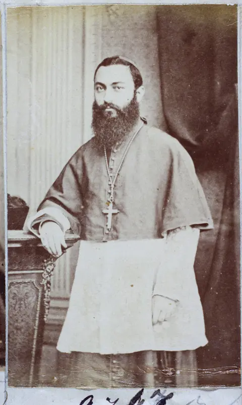

“JESUS AUTEM TACEBAT”
D. Vital já havia declarado, ao ser instado a responder à denúncia, que não podia fazê-lo “porque seria reconhecer a competência do Tribunal civil em matéria religiosa”. Preso às 13 horas de 2 de janeiro de 1874, no Palácio da Soledade, no Recife, recebeu a autoridade solenemente paramentado e leu um protesto, chegou ao Rio no dia 13 e foi recolhido ao Arsenal de Marinha, onde, ao receber o libelo, deu como única contestação uma linha: “Senhor! — Jesus autem tacebat”, “Jesus, porém, calava-se”, palavras com que São Mateus descreve Cristo diante do sumo sacerdote.
O Supremo Tribunal de Justiça o julgou de 18 a 21 de fevereiro e o condenou a “quatro anos de prisão com trabalho e custas”, e só um ministro, o barão de Pirapama, votou pela nulidade.
PARTE I · A NOITE EM QUE UM BISPO ENFRENTOU O IMPÉRIO